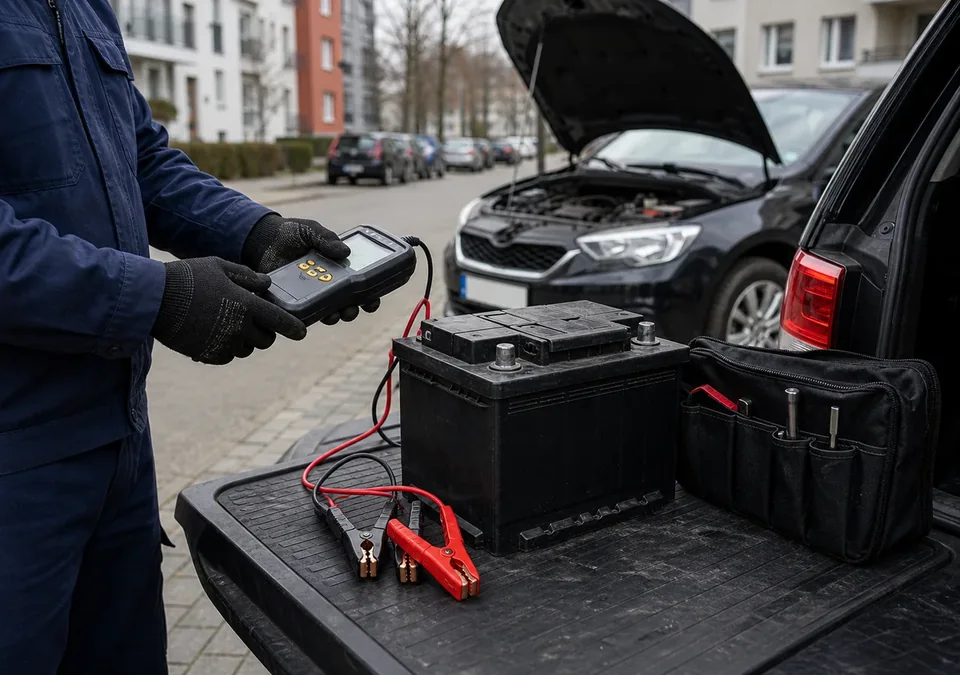
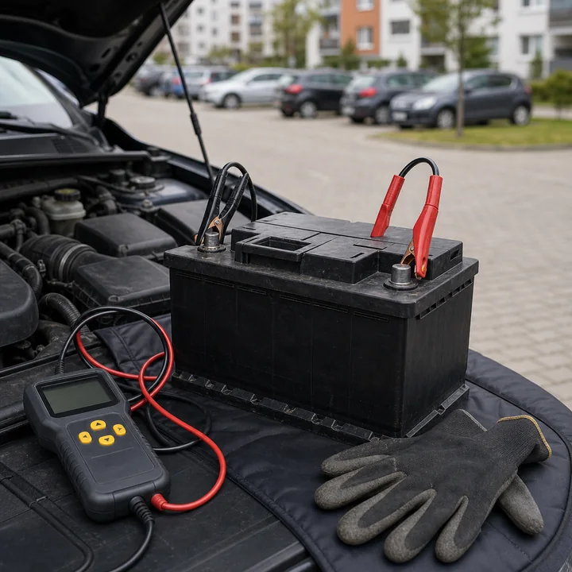
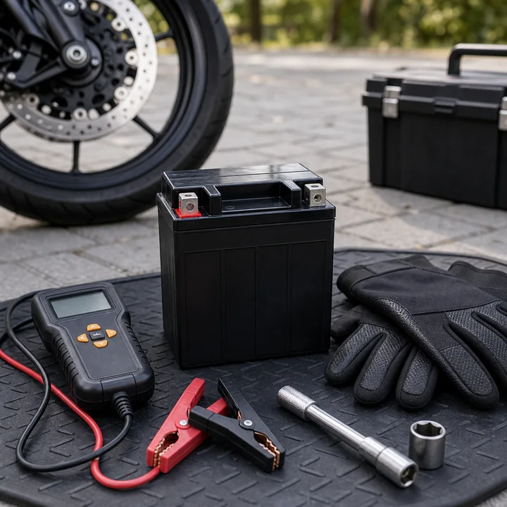
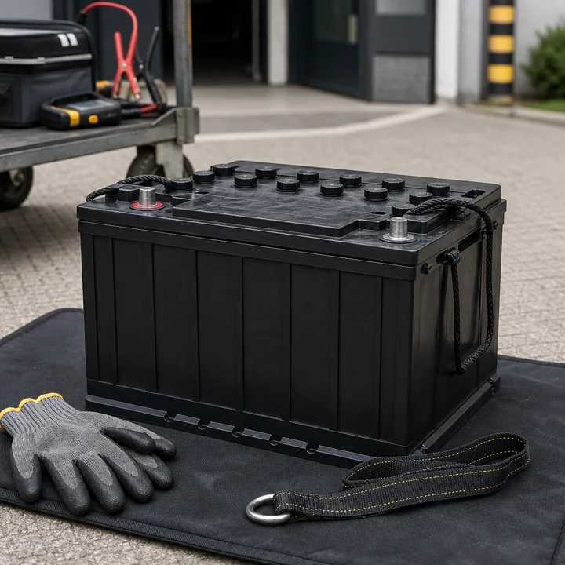

Zadzwoń i opisz objawy
Przygotuj markę i model auta, rocznik, silnik, objawy oraz — jeśli możesz — parametry obecnego akumulatora.
Auto słabo kręci, nie odpala po postoju albo słychać tylko kliknięcie? Zadzwoń, aby ustalić test, dobór i wymianę akumulatora przy samochodzie.
Katowice-Giszowiec i okolice po potwierdzeniu telefonicznym.

Jedna krótka rozmowa pozwala ustalić objawy, samochód i miejsce obsługi. Potem wiadomo, czy potrzebny jest test, nowy akumulator i montaż.
Przygotuj markę i model auta, rocznik, silnik, objawy oraz — jeśli możesz — parametry obecnego akumulatora.
Darmowy test pomaga ustalić, czy problem dotyczy akumulatora, ładowania czy sposobu użytkowania. Dobór uwzględnia auto, wyposażenie, sposób jazdy i budżet.
Wymianę i montaż przy samochodzie wykonujemy z dojazdem albo przy biurze po wcześniejszym umówieniu. Biuro nie jest osobnym warsztatem.
Sprzedaż: akumulator dobrany do konkretnego pojazdu i budżetu.
Montaż: przy samochodzie, z dojazdem albo przy biurze po umówieniu.
Recykling: zużyty akumulator możesz zostawić do odpowiedniego recyklingu.
Lokalna firma właścicielska
Firmę prowadzi Dariusz Cieszyński. Rozmawiasz bezpośrednio z właścicielem, aby ustalić objawy i możliwą diagnozę, dobór akumulatora, miejsce oraz termin obsługi.
Przed przyjazdem do biura przy ul. Miłej 8 zadzwoń. Obsługa przy samochodzie wymaga wcześniejszego umówienia.
Exide, Varta, Bosch, Centra i inne marki dobierane do konkretnego samochodu, stylu jazdy i budżetu.

Do aut osobowych, dostawczych i samochodów z systemem Start-Stop. Dobór uwzględnia wyposażenie auta, sposób jazdy i parametry obecnego akumulatora.

Na sezon, do regularnej jazdy i pewnego rozruchu. Przed doborem warto podać model motocykla albo parametry starego akumulatora.

Do pracy, maszyn, wózków i zastosowań specjalnych. Dobór ustalamy po parametrach, sposobie użytkowania i miejscu pracy urządzenia.
Biuro firmy znajduje się przy ul. Miłej 8 w Katowicach-Giszowcu. Test, wymianę i montaż akumulatora wykonujemy przy samochodzie: z dojazdem do klienta albo przy biurze po wcześniejszym umówieniu.
Przed przyjazdem zadzwoń i potwierdź szczegóły. To adres biura firmy, a test, wymianę i montaż wykonujemy przy samochodzie po wcześniejszym umówieniu.
Adres biura nie oznacza osobnego warsztatu. Pracujemy przy samochodzie.
Tak. Test pomaga ustalić przed wymianą, czy problem dotyczy akumulatora, ładowania czy sposobu użytkowania. Szczegóły miejsca obsługi potwierdź telefonicznie.
Test, wymianę i montaż wykonujemy przy samochodzie: z dojazdem do klienta albo przy biurze firmy po wcześniejszym umówieniu.
Markę i model auta, rocznik, silnik, objawy oraz — jeśli możesz — parametry obecnego akumulatora.
To adres biura firmy, nie osobny warsztat. Przed przyjazdem zadzwoń i potwierdź szczegóły.